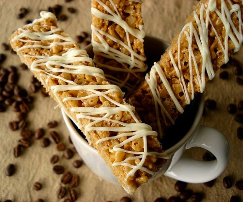

Chronicles Of A Young Mom
Home Page
Latte Rice Krispies Treats

Prep time: 10 mins Cook time: 5 mins Servings: 26
Ingredients:
- 3 tablespoons butter
- 1 tablespoon instant coffee
- 1/2 teaspoon vanilla
- 1 (10 ounce) package marshmellows
- 6 cups crisp rice cereal
- 1/4 cup white chocolate chips or 1/4 cup candy coating, melted
Directions:
- Melt butter in large saucepan on low heat.
- Add instant coffee and vanilla, stir well.
- Add marshmallows; cook until marshmallows are completely melted and mixture is well blended, stirring constantly.
- Remove from heat.
- Add cereal; mix well.
- Press firmly into greased 13x9-inch pan
- Cool completely.
- Cut into approximately 26 1x4.5-inch bars.
- Melt white chocolate chips and drizzle over bars. Allow to chocolate to cool and harden.